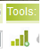
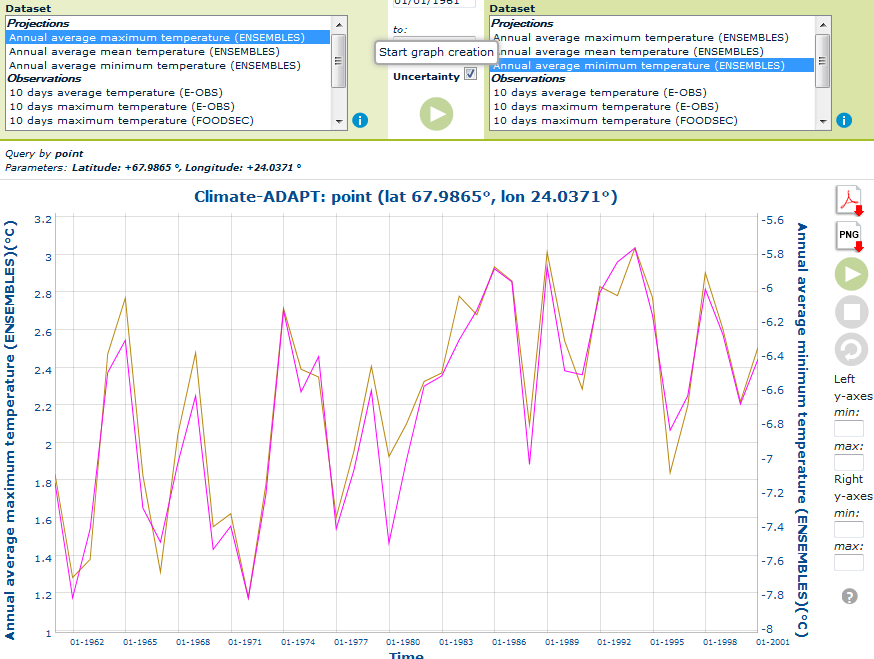
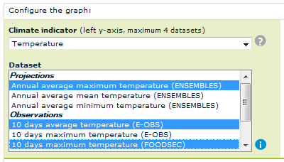
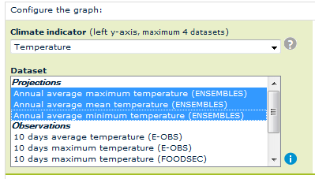
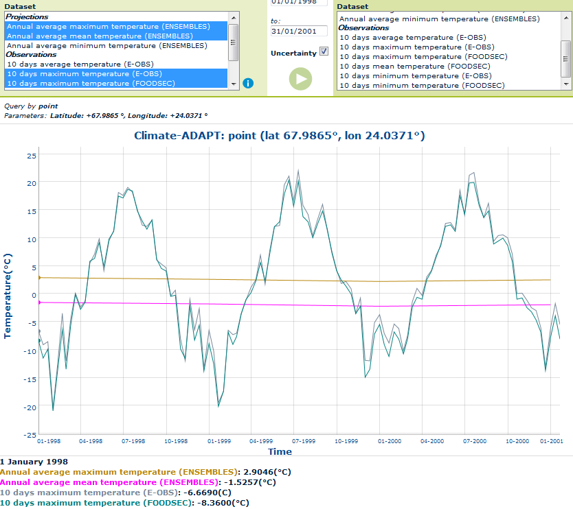
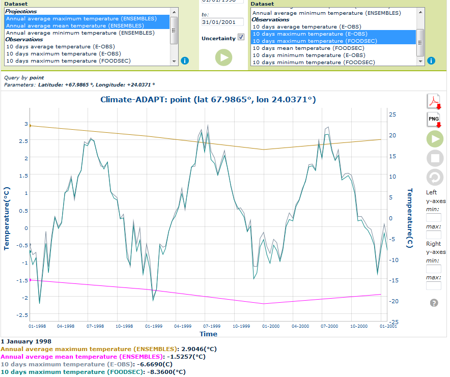

Query more datasets
To query a single dataset is enough to select a valid value from the first "Climate Indicator" list: all available datasets will be loaded automatically into the "Dataset" list.
Select a valid dataset, where available a "Scenario" value, and then a "Spatial Selection" ("Query by Single Point", "Query by rectangular box", "Query by specific geographical area") in order to start automatically the graph creation.
Another way to create the plot is to configure it by clicking over : select one or more datasets to query just by clicking over them on dialog configuration.
You can select to:
Top
Query: one dataset on left y-axis and one on right y-axis
Select a dataset from left y-axis list and a dataset from right y-axis to compare them as shown in the following figure:

The spatial selection used is the same for both datasets.
When a dataset is a "shapefile", the "geographical area" used to compare it with a "raster" dataset is the shapefile area identified by x and y coordinates.
Top
Query: more datasets on left y-axis
To select more datasets on the same left Y-axis, select a "Climate Indicator" on the left upper section and then select one or more datasets from the list using:
- CRTL button and mouse click, to select not consecutive values;

- SHIFT button and mouse click, to select consecutive values;

Graph example with more datasets on "left y-axis":

Top
Query: more datasets on left y-axis and more on right y-axis
The same procedure on "left y-axis" can be adopted to select more datasets on "right y-axis".
